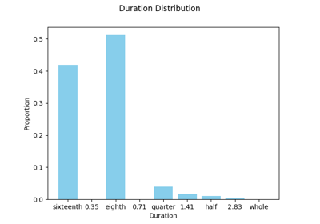
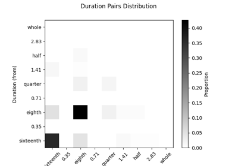
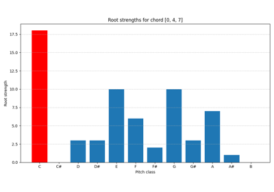
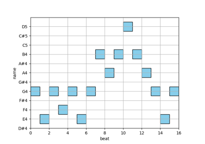
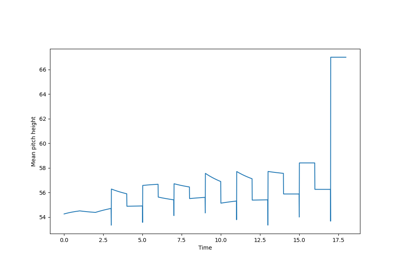

Examples

Duration distributions (I)

Duration distributions (II)

Root analysis (after Parncutt)
Root analysis (after Parncutt)

Boundary detection

Sliding window analysis
Examples
Root analysis (after Parncutt)